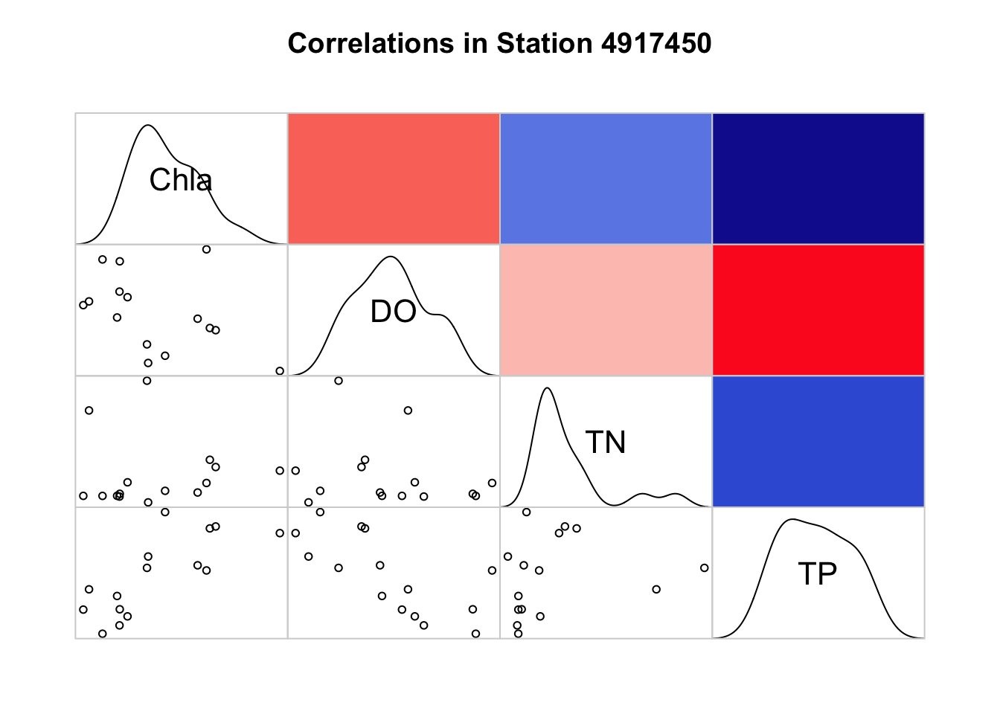
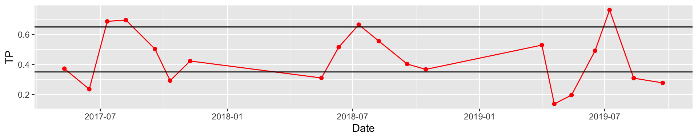

Chapter 4 Results
Using the Spearman Method, the correlation coefficients between all the parameters show a strong positive correlation between the Total Phosphorus (TP) and the Chlorophyll-a (Chl-a) and a strong negative correlation between the Total Phosphorus (TP) and the Dissolved Oxygen (DO)

Taking in consideration only the strong correlation coefficients, the analysis was focused in the Chl-a, TP, DO, and also in the TN to be considered a primary nutrient to the production of algal bloom.To understand better what is the correlation between Chl-a and TP, the following graph shows the values of Chl-a in function of the values of the TP for the 3 years analyzed.
## `geom_smooth()` using method = 'loess' and formula 'y ~ x'
From the graph, we can see that the positive correlation between the TP and Chl-a is stronger for values of TP between 0.35 and 0.65 mg/l.
Because TN is considered another primary nutrient to the production of algal bloom, and because the correlation coefficient between Chl-a and TN is low, a time series graph between Chl-a, TP, and TN is performed to consider the influence of the TN.

The time series analysis shows that when the TN is too high, the Chl-a decreases, even though the TP has value between 0.35 and 0.65 mg/l. The positive correlation between the TN and Chl-a is for values of TN between 0.60 and 1.10 mg/l.
## `geom_smooth()` using method = 'loess' and formula 'y ~ x'
Contrary to expectations, TN influences algal growth only for low total values. For high values of TN, it seems to have a negative correlation.
Because the TP and DO have a strong negative correlation, the time series analysis is performed to see the relationship between these two variables and the Chl-a.

## `geom_smooth()` using method = 'loess' and formula 'y ~ x'
## `geom_smooth()` using method = 'loess' and formula 'y ~ x'

Figure 4.1: Chlorophyll a distribution by month